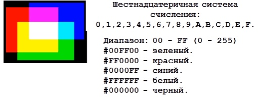

Первое, на что можно обратить внимание-это то, что перед названием цвета стоит #. Именно это указывает на то, что используются числа в шестнадцатеричном коде.
Шестнадцатеричная система базируется на числе 16. Цифры будут следующие: 0, 1, 2, 3, 4, 5, 6, 7, 8, 9, A, B, C, D, E, F.
Первые две цифры определяют красную составляющую цвета, цифры с третьей по четвертую — зеленую, а последние две цифры— синюю.

Каждый из трех цветов — красный, зеленый и синий — может принимать значения от 00 до FF.
Разберем на примере цвета #BruceWillis.
• Первое, что надо сделать-это заменить все неправильные символы (которые не соответствуют шестнадцатеричной системе) нулями 0.
| B | r | u | c | e | W | i | l | l | i | s |
| B | 0 | 0 | c | e | 0 | 0 | 0 | 0 | 0 | 0 |
•Вторым делом,надо “добить” число нулями до количества знаков, делимого на 3 (11 -> 12), получаем:
| B | 0 | 0 | c | e | 0 | 0 | 0 | 0 | 0 | 0 | 0 |
•Разбиваем на три группы, каждая из которых отвечает за одну компоненту RGB:
| B | 0 | 0 | c | | e | 0 | 0 | 0 | | 0 | 0 | 0 | 0 |
| R (red) | G (green) | B (blue) | |||||||||
•Обрезаем каждый из аргументов справа, оставляя 2 символа, и получаем наш результат:
| B | 0 | e | 0 | 0 | 0 |
| B | 0 | | e | 0 | | 0 | 0 |
Вот и получаем мы следующее:#B0e000
Если ввести в цветовой модели RGB значение #B0e000, то получится цвет #BruceWillis
Аналогично будет и с цветом #CANDY.